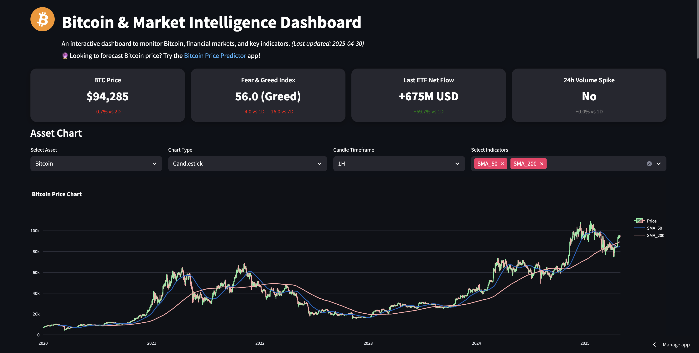

🔍 Project Overview
This interactive dashboard tracks Bitcoin alongside key financial assets such as the S&P 500, Nasdaq, Gold, and macroeconomic indicators. Built using Python and Streamlit, it allows users to explore trends, compare indicators, and monitor market signals in real time.
🧠 Learning & Tech Stack
This project helped me apply key data and visualization skills to a real-world financial context. It involved combining various tools and techniques to deliver a clean, responsive, and insightful dashboard.
- 💻 Python – data processing, visualization, and automation
- 📊 Streamlit – for building the interactive web dashboard
- 📈 Pandas & NumPy – data manipulation and feature engineering
- 🧮 Technical Analysis – calculate traditional indicators and create signals
- 🌐 API & CSV Integration – fetch data from different sources and through different methods
- 🎨 UI/UX Design – consistent, clean layout with css styling
- 🧩 Data Merging – aligning multi-source time series for joined insights
- 🚀 Deployment – Streamlit Cloud + GitHub for version control
✨ Features
- 📈 Real-time Bitcoin price and market KPIs
- 📊 Dynamic line/candlestick charts with technical indicators overlays
- 💡 Signals & sentiment summaries (MACD, VWAP, RSI, etc.)
- 🧾 Spot ETF flow analysis (daily & cumulative)
- 🔍 Fear & Greed Index + Google Trends visualization
🖥️ Dashboard Preview
A snapshot of the working dashboard built in Streamlit:
